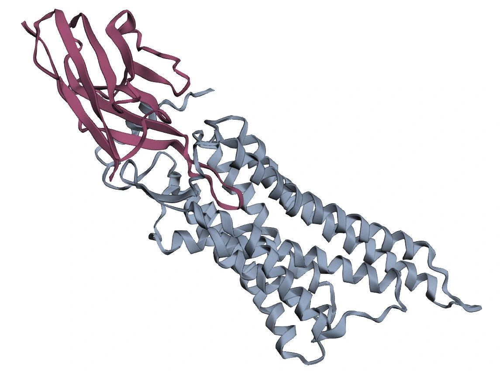
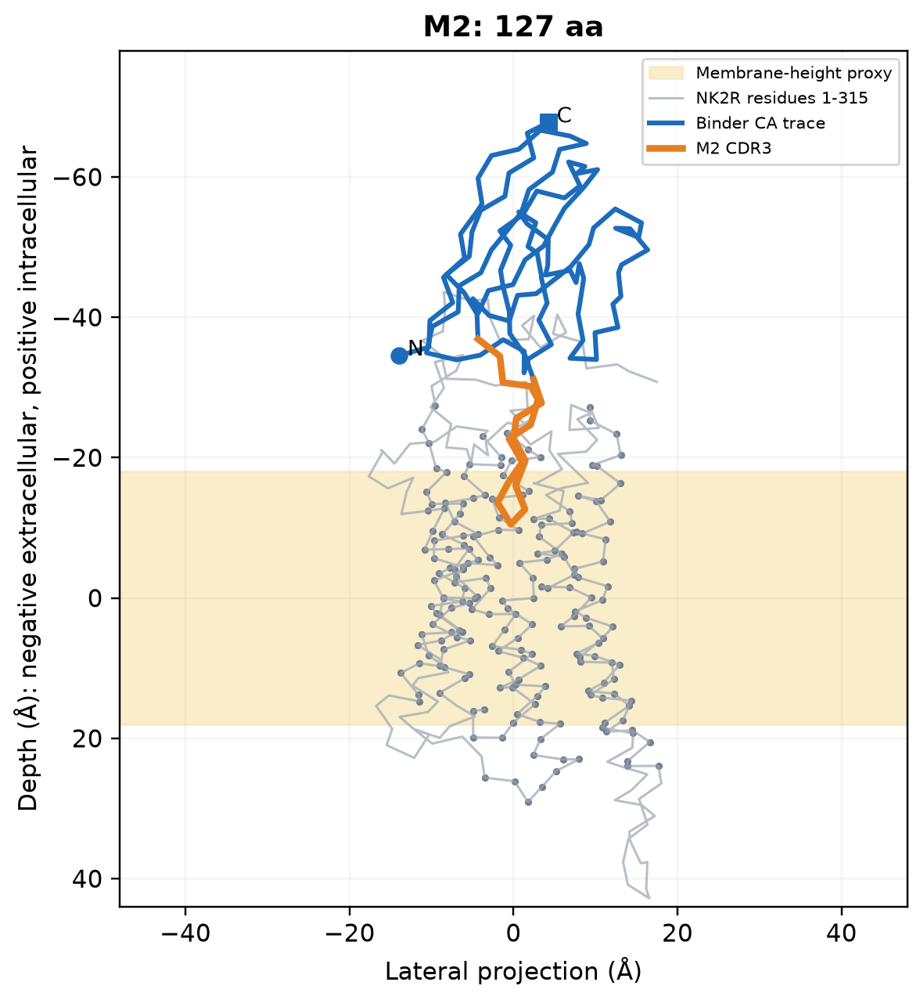

Structure-guided nanobody design for NK2R
I design nanobodies for NK2R, a receptor on the cell surface. The question was which designs to take forward for experimental testing.
Workflow
My starting point was M2, a nanobody I designed for NK2R. Our team made variants by changing the loops that face the receptor. For each candidate, I compared models of the nanobody and NK2R together.
I aligned the models on the receptor. This gave them a common frame of reference. I could then see where each model placed the nanobody and which parts of NK2R its loops could reach.


Outcome
All of our NK2R candidates shortlisted for experimental testing came from the M2 design. The figure below shows the parent nanobody from which the team developed those variants.

